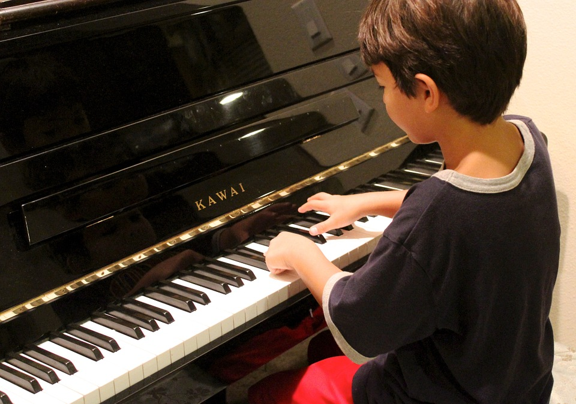

Chi siamo

Vivo per Lei - Associazione Artistica per Talenti Musicali nasce nel 1996 nella cittá di Lodi con lo scopo di promuovere la musica in tutte le sue espressioni.
L'associazione si rivolge ai giovani appassionati e ai professionisti.
Vivo per Lei vuole essere un mezzo creativo per tirare fuori la propria personalitá.
Un canale i cui obiettivi sono: arricchire le proprie competenze e creare nuovi legami tra le persone e il mondo musicale.
Tra le nostre collaborazioni: Tour Music Fest, Accademia Gerundia, Accademia Gaffurio, Ars Nostra, Kantafestival, UnaVocePerSesto.
La nostra storia (in breve)
Nada Cenci nasce il 23 dicembre 1976 nella cittá di Lodi, all'etá di 8 anni si appassiona al canto e alla musica.
Durante il suo percorso professionale si laurea in Canto Jazz presso il Conservatorio di Giuseppe Verdi di Milano e decide di fondare l'associazione Vivo per Lei per poter diffondere il valore della musica.
Insieme a lei collabora un équipe di professionisti, i quali hanno maturato una buona esperienza in tutto ció che riguarda le teorie e le tecniche di performance musicali.
I nostri allievi
|  |